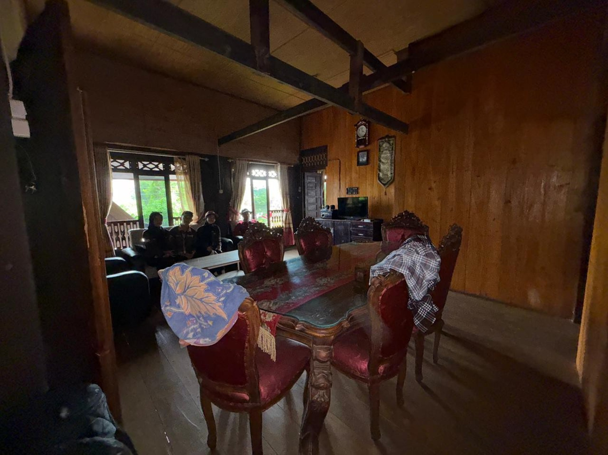
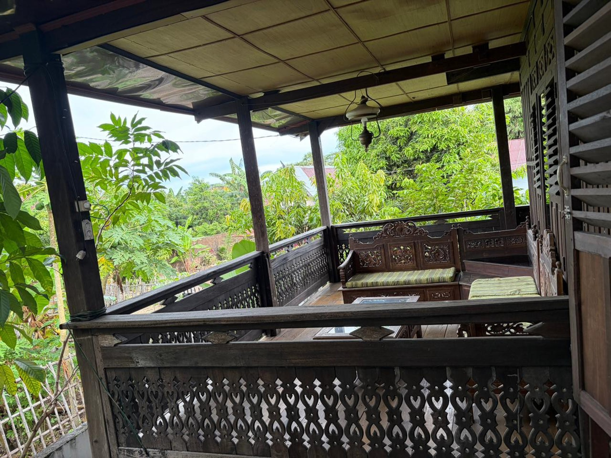
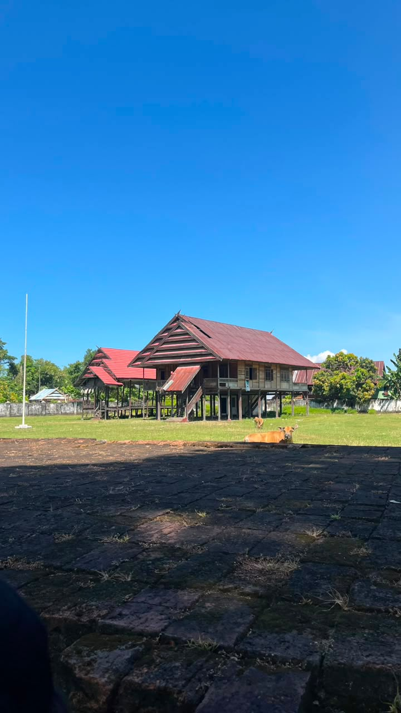
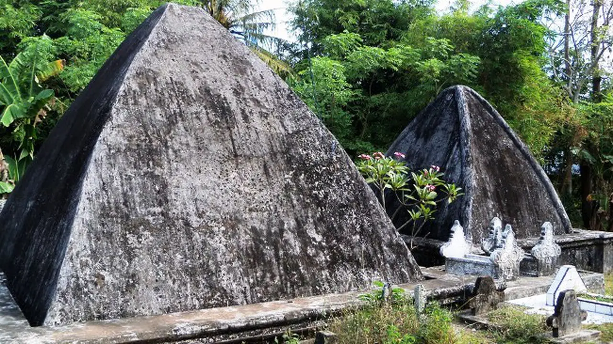
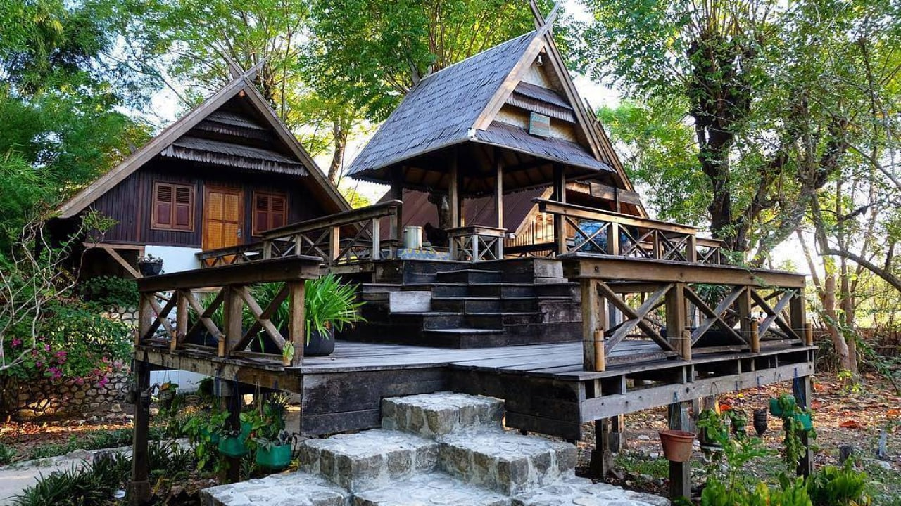
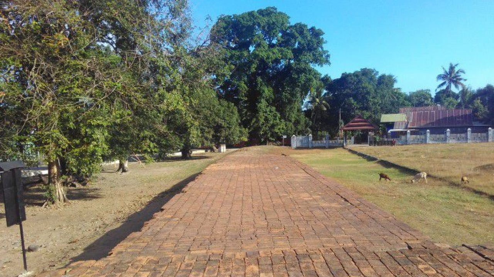
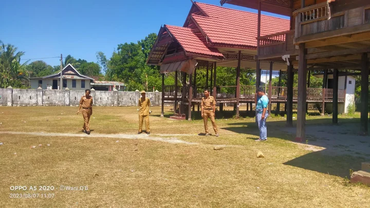

Sejarah & Profil Wilayah
Desa Wisata Sanrobone merupakan salah satu destinasi wisata budaya dan sejarah yang berada di Kabupaten Takalar, Sulawesi Selatan. Desa ini memiliki nilai historis yang kuat karena merupakan bagian dari kawasan bekas Kerajaan Sanrobone yang pernah memiliki peranan penting dalam perkembangan budaya dan pemerintahan di wilayah tersebut. Meskipun baru ditetapkan sebagai desa wisata sekitar satu tahun yang lalu, Desa Sanrobone telah menunjukkan perkembangan yang sangat pesat. Dari ribuan desa wisata di Indonesia, Desa Sanrobone berhasil masuk dalam jajaran 300 besar desa wisata potensial, yang menunjukkan besarnya daya tarik dan peluang pengembangan wisata yang dimiliki.
Secara administratif, Kecamatan Sanrobone sendiri merupakan kecamatan yang relatif baru, dibentuk pada tahun 2007. Desa Sanrobone terdiri dari enam desa dan memiliki lima dusun yang tersebar di dalam maupun di luar kawasan inti desa. Dusun Salekowa, Kasuarrang, dan Sanrobone berada di dalam kawasan desa, sedangkan Dusun Bontowa dan Dusun Lau berada di luar wilayah inti desa. Struktur wilayah ini mencerminkan kehidupan masyarakat yang masih sangat erat dengan nilai-nilai budaya dan tradisi lokal.
Desa Wisata Sanrobone dibangun dengan tiga pilar utama, yaitu sejarah, budaya, dan agama. Ketiga pilar tersebut menjadi identitas utama desa dalam mengembangkan potensi wisata yang berkelanjutan. Berbagai situs bersejarah masih dapat ditemukan dan dijaga dengan baik oleh masyarakat setempat. Beberapa di antaranya adalah Benteng Sanrobone, Balla Lompoa atau rumah adat kerajaan, makam raja-raja, serta masjid tua yang memiliki nilai sejarah tinggi. Selain itu, Desa Sanrobone juga memiliki sekitar 14 hingga 18 situs bersejarah yang menjadi bukti kejayaan masa lampau kerajaan tersebut.
Keberadaan rumah adat Sanrobone menjadi salah satu daya tarik utama desa wisata ini. Rumah adat tersebut dibangun pada tahun 2008 dan pada tahun 2025 resmi ditetapkan sebagai cagar budaya. Penetapan ini menjadi langkah penting dalam upaya pelestarian warisan budaya lokal agar tetap terjaga dan dapat diwariskan kepada generasi mendatang. Selain itu, ditemukan pula dua meriam peninggalan sejarah yang semakin memperkuat nilai historis kawasan ini.
Desa Sanrobone juga dikenal melalui kawasan makam kerajaan yang memiliki bentuk menyerupai piramida. Di area tersebut terdapat bedug tua yang hingga kini masih digunakan dalam kegiatan keagamaan dan adat masyarakat. Nilai spiritual dan budaya yang melekat pada situs-situs tersebut menjadikan Desa Sanrobone tidak hanya sebagai tempat wisata, tetapi juga sebagai ruang pembelajaran sejarah dan budaya masyarakat Sulawesi Selatan.
Dalam pengembangannya, Desa Wisata Sanrobone menghadapi persaingan dengan beberapa destinasi budaya lainnya di Sulawesi Selatan, seperti Katangka dan Luwu Palopo. Namun demikian, keunikan sejarah Kerajaan Sanrobone, kekayaan situs budaya, serta keterlibatan masyarakat dalam menjaga tradisi menjadi kekuatan utama yang membedakan desa ini dari destinasi lainnya.
Dengan potensi sejarah, budaya, dan religi yang dimiliki, Desa Wisata Sanrobone memiliki peluang besar untuk terus berkembang menjadi destinasi wisata unggulan berbasis kearifan lokal. Keberadaan desa ini diharapkan tidak hanya mampu menarik wisatawan, tetapi juga dapat meningkatkan perekonomian masyarakat serta memperkuat pelestarian budaya daerah.
Ringkasan Sosial & Budaya
- Arti Bahasa: Sanro (Tabib/Penyembuh) dan Bone (Orang Bone). Melambangkan tempat tabib asal Bone yang menyembuhkan dengan kearifan lokal.
- Nilai Spiritual: Simbol batin pencari ketenangan jiwa dan keharmonisan hidup masyarakat Bugis-Makassar.
- Piramid Makam Kerajaan: Situs makam raja kuno berbentuk piramida. Menyimpan Bedug Tua dari pohon cabai untuk acara adat, serta Sumur Adat yang tidak pernah kering sebagai simbol keberkahan dan lokasi mandi pernikahan.
- Masjid Tua Baitul Maqdis: Bukti awal masuknya Islam di Sanrobone yang dibawa pedagang/ulama Arab (seperti figur Tuban atau Pagaruyun Arab), menggeser pengaruh ajaran Hindu-Buddha kuno.
- Fungsi Utama: Rumah adat panggung (didirikan 2016) yang menyimpan silsilah keturunan raja-raja Sanrobone.
- Peninggalan & Kegiatan: Menyimpan peninggalan Tasbih Raksasa dan ruang pembakaran roti tradisional kerajaan. Menjadi kediaman pemangku adat serta pusat perayaan besar seperti Maulid Nabi.
Integrasi situs kerajaan, kearifan lokal, dan religi yang hidup menjadikan Sanrobone sebagai pusat edukasi sejarah sekaligus destinasi wisata budaya unggulan di Kabupaten Takalar, Sulawesi Selatan.
Potensi Wisata Budaya
Warisan luhur yang menjadi daya tarik utama.
Balla Lompoa
Rumah adat panggung yang merupakan pusat adat, penyimpan silsilah keturunan raja-raja Sanrobone, sekaligus kediaman pemangku adat.

Makam Kerajaan
Kawasan makam raja berbentuk piramida. Di area ini terdapat bedug tua dari pohon cabai serta sumur adat yang airnya tidak pernah kering.

Masjid Tua Baitul Maqdis
Situs sejarah penting yang menjadi bukti awal masuknya Islam di Sanrobone, dibawa oleh pedagang atau ulama Arab.
Aksesibilitas
Aksesibilitas menuju Desa Sandrobone sudah cukup baik, dimana jalan menuju lokasi dapat dilalui oleh kendaraan roda dua maupun roda empat. Hal ini menjadi nilai tambah dalam mendukung mobilitas wisatawan. Namun demikian, penataan fasilitas pendukung seperti area parkir masih perlu ditingkatkan agar lebih tertib dan terorganisir.
Akomodasi (Homestay)
Rasakan pengalaman autentik kehidupan sosial dan budaya masyarakat lokal.
Homestay Bersejarah 01
Mulai Rp 200.000/malam
Homestay Berbudaya 01
Mulai Rp 200.000/malam
Homestay Bersejarah 02
Mulai Rp 250.000/malamFasilitas yang tersedia umumnya meliputi: Kamar mandi bersama, perlengkapan mandi, kipas angin, televisi, dan sarapan pagi. Kesederhanaan ini justru memberikan suasana alami masyarakat pedesaan.
PELAJARI DETAIL AKOMODASI
Amenitas dan Fasilitas
Fasilitas pendukung kenyamanan masyarakat lokal maupun wisatawan.
Desa Sanrobone telah memiliki sejumlah fasilitas yang menunjang kebutuhan wisatawan, mulai dari warung makan lokal, toko kelontong, puskesmas, mesin ATM, hingga sarana ibadah masjid. Keberadaan fasilitas ini menunjukkan potensi desa untuk berkembang menjadi destinasi berbasis masyarakat yang optimal. Meskipun masih dalam kategori sederhana, pengembangan sarana ini sangat penting untuk menciptakan kenyamanan dan kepuasan pengunjung.
PELAJARI DETAIL FASILITAS
Souvenir & Oleh-oleh
Identitas budaya yang dikembangkan oleh Pokdarwis.
- Abon Ikan Bolu & Bandeng Tanpa Tulang: Produk olahan kuliner khas desa seharga Rp. 20.000.
- Kriya Gantungan Kunci: Souvenir berbentuk rumah adat atau Balla Lompoa seharga Rp. 5.000.
- Baju Kaos Desa Wisata: Kaos dengan identitas Sanrobone seharga Rp. 85.000 - Rp. 90.000.
- Aneka Kanrejawa Turiolo: Aneka jajanan tradisional manis warisan leluhur mulai dari Rp. 2.500 - Rp. 25.000/pcs.
PELAJARI DETAIL SOUVENIR







"Berdasarkan hasil penilaian, akomodasi di Desa Wisata Sanrobone memperoleh skor total sebesar 40 dari 50 (Kategori Baik). Nilai tertinggi dicapai pada pelayanan masyarakat, nuansa budaya lokal, daya tarik wisata, dan potensi pengembangan."
Reservasi
Untuk reservasi homestay, ketersediaan akomodasi, maupun pemesanan souvenir, silakan hubungi kontak resmi di bawah ini:
082347764426
Scan QR Code untuk reservasi:
Email: desasanrobone22@gmail.com